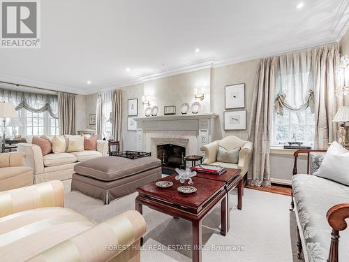

80 Old Forest Hill Road


Price: $6,495,000
Address: 80 Old Forest Hill Road, Toronto
Size: 5000 - 100000 sqft
Rooms: 5 bds , 6 bths
Description: This classically traditional Forest Hill home exemplifies incomparable elegance and modern luxury, boasting five spacious bedrooms and six exquisitely appointed washrooms. Nestled in one of the most prestigious neighbourhoods, this residence features meticulous attention to details throughout its architecture, from the grand entrance to the intricate moldings and custom millwork. State-of-the-art renovations flawlessly blend with its classic charm, offering an exceptional living experience. Every room is thoughtfully designed with high-end finishes, creating a perfect harmony of comfort, sophistication, and style, ideal for both family living and entertaining. The front and backyard of this home are beautifully and traditionally landscaped, offering an inviting, elegant retreat. The front yard showcases manicured hedges and mature trees, providing a timeless curb appeal. The backyard is equally impressive, featuring lush greenery, perfectly trimmed laws, and a serene garden setting. A thoughtfully designed seating area invites relaxation, while a well-appointed dining area makes entertaining effortless. This outdoor oasis blends sophistication and comfort, ideal for gatherings or quiet moments surrounded by natures beauty. Heated driveway and front landing, Irrigation system, Professionally landscaped backyard with custom pergola, seating area, dining area, and anti-theft lighting, Slate roof, Sump pump, Full generator.